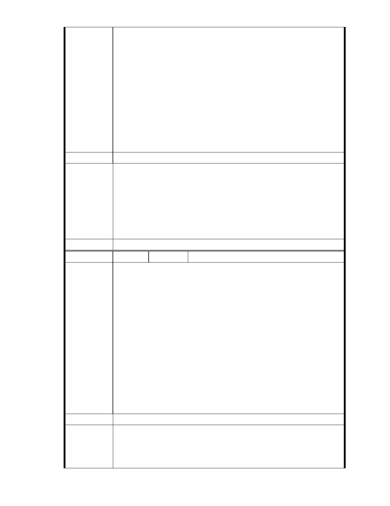

「陳教授宏宇：3、本案不僅為保護區，更是座落於溝谷中的地質敏
感區，比對雞南山危險聚落之山勢，實在有諸多相似之處。發展局
也曾邀請學者、專家就本案之地質安全、水土保持、逕流沖刷、邊
坡穩定、排水措施等各項議題提出建議，很遺憾的，包括本人在內
的幾位受邀者，均很無奈的拒絕參加這種硬要以“人定勝天”技術克
服一切的方式，來背負這個個案開發的背書者」，反對變更山坡地
保護區做為社會福利設施用地。
五、本人長期居住於台北市內湖區大湖里，受本案保護區變更後之負面
影響最大，請貴會通知本人列席參與本案後續所有會勘、審議、專
案小組會議及大會，並請依政府資訊公開法將會議時間、地點，以
及會議資料、紀錄等相關資訊提前公開上網，俾便閱覽。
建議辦法
一、本案申請範圍於慈濟購得前已遭非法填土，實不具保護區之功能，
今申請單位欲興辦社會福利事業，故依法辦理都市計畫變程序；目
市府說明
前申請方案較先前方案已大幅降低開發強度、調整使用項目並承諾
大面積滯洪設施等回饋事項，顯示申請單位欲改善現況之誠意。
二、相關陳情意見將納入本案審查人民意見，依法定程序辦理。
三、後續審理程序將要求申請人加強與在地區民、社會大眾，就基地現
況、規劃方案及環境助益作為等方面加強溝通。
委 員 會 決 議 同編號 1。
編
號 111
陳情人 台灣生態學會
主旨：有關「變更臺北市內湖區成功路五段大湖公園北側部分保護區為
社會福利特定專用區主要計畫案」乙案，不應提都市計畫委員會
審議，請查照。
說明：
一、「變更臺北市內湖區成功路五段大湖公園北側部分保護區為社會福
陳情理由
利特定專用區主要計畫案」係保護區之個案變更，該案已依據都計
法第 27 條第一項第 3 款「為適應國防或經濟發展之需要時」提報
貴會審議。
二、惟該案之變更內容與國防或經濟發展並無任何關連，顯然是為達變
更目的而濫用都市計畫之法令。
三、請貴會應嚴守都市計畫行政體制並嚴格把關，應以「法令依據不符」
為由退回本案，而非破壞體制，讓本案排入委員會（含專案小組）
審議。
建議辦法
市府說明
一、本案申請範圍於慈濟購得前已遭填平破壞作汽車停車場使用，已長
年不具保護區之功能；目前申請方案較先前方案已大幅降低開發強
度、調整使用項目並承諾大面積滯洪設施等回饋事項，將改善地區
整體環境促進多贏發展。
- 113 -